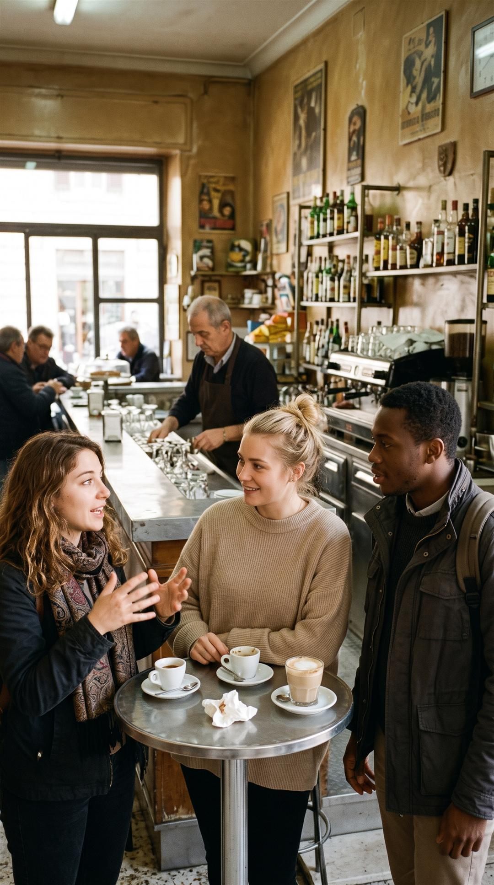
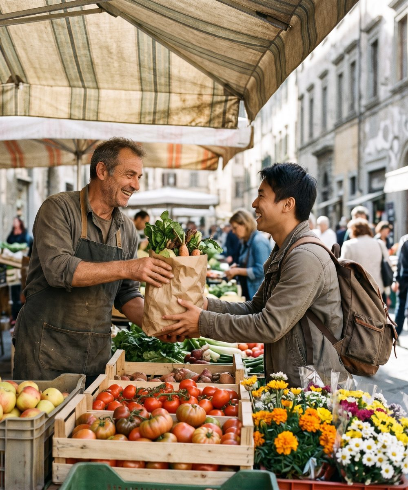

Vi siete scelti tutti e due
Mostri interesse per qualcuno. Se lo mostra anche lui, la chat si apre. È gratis, ed è sempre la prima strada che proponiamo.
Il bar con la parola d'ordine sulla porta. Il vino servito da uno sportello nel muro. Una persona del posto ti mostra il suo pomeriggio, e nessuno lo paga.
[INVITATION DESTINATION HERE] Guarda come funziona

Mostri interesse per qualcuno. Se lo mostra anche lui, la chat si apre. È gratis, ed è sempre la prima strada che proponiamo.
Paghi una volta e scrivi a quella persona senza il match. Quella cifra compra la presentazione, e nient'altro.
I profili sono pubblici e si leggono gratis. Il contatto resta chiuso finché non lo apre una delle due strade, così nessuno si vede arrivare messaggi solo perché era visibile.
Nessuno paga la giornata. Non una tariffa, non una mancia, non un regalo che tutti sanno essere una tariffa.
È la differenza fra uno scambio culturale e il turismo organizzato. Un host che chiede di essere pagato per il suo tempo viene rimosso.

Nessuno deve niente a nessuno. Essere ospitato non ti mette in debito, e non ospitare mai non ti chiude nessuna porta.
Mettiamo le persone in contatto. Quello che succede dopo, un caffè, un soggiorno o solo una conversazione, lo decidono loro due.
[INVITATION DESTINATION HERE]